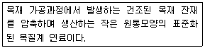
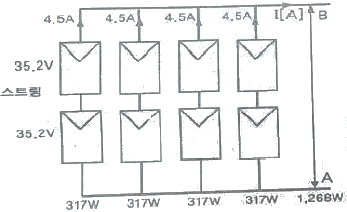
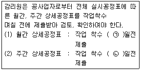
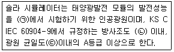
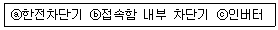
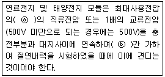

신재생에너지발전설비산업기사 (2017-05-07 기출문제)
1과목: 태양광 발전 시스템 이론
1. 재생에너지의 장점에 대한 일반적인 설명으로 틀린 것은?
- 대부분의 재생에너지는 공해가 적거나 거의 없다.
- 재생에너지원은 지속적으로 존재하며 고갈되지 않는다.
- 재생에너지원은 지역적으로 개발되는 특성을 가진다.
- 대부분의 재생에너지는 매우 저렴한 비용으로 얻을 수 있다.
(정답률: 90%)

2. 태양광발전시스템을 분류하는 방법으로 일반적인 기준이 아닌 것은?
- 부하의 형태
- 계통연계 유무
- 태양전지 종류
- 축전지의 유무
(정답률: 58%)
3. 축전지의 기대수명 결정요소와 거리가 먼 것은?
- 사용온도
- 방전심도
- 방전흿수
- 축전지 용량
(정답률: 85%)
4. 태양광설비 용량이 3MWp，일일발전시간이 4.6시간인 경우 연간발전량은 몇 MWh 인가?(단, 태양광 발전소는 1년 365일 동일 발전량으로 발전하며，효율은 100%로 가정한다.)
- 620
- 1095
- 3280
- 5037
(정답률: 85%)
5. 뇌보호형 부품이 아닌 것은?
- 내뇌트랜스
- 서지흡수기
- 단로기
- 피뢰기
(정답률: 84%)
6. 태양광발전에 영향을 주는 인자끼리 바르게 묶인 것은?
- 전압 - 온도，전류 - 풍량
- 전압 - 온도，전류 - 일사량
- 전압 - 풍량，전류 - 일사량
- 전압 - 일사량，전류 - 온도
(정답률: 88%)
7. 도선의 길이가 2배로 늘어나고 지름이 1/2로 줄어들 경우 그 도선의 저항은?
- 4배 증가
- 4배 감소
- 8배 증가
- 8배 감소
(정답률: 78%)
8. 태양전지의 효율적인 반응을 위한 에너지 밴드갭(eV)은?
- 0~0.5
- 0.5~1
- 1~1.5
- 2~3
(정답률: 73%)
9. 태양전지에서 생산된 전력 3kW가 인버터에 입력되어 인버터 출력이 2.4kW가 되면 인버터의 변환효율은 몇%인가?
- 60
- 70
- 80
- 90
(정답률: 86%)
10. 위도 36.5° 일 때 동지 시의 남중고도는?
- 45°
- 40°
- 35°
- 30°
(정답률: 76%)
11. 저항 1kΩ, 커패시터 5000μF의 R-C 직렬회로에 전압 100V의 전압을 인가하였을 때 시정수는 몇 sec 인가?
- 0.5
- 5
- 50
- 500
(정답률: 56%)
12. 다음 중 수평축 풍력발전시스템은?
- 프로펠러형
- 다리우스형
- 파워타워형
- 사보니우스형
(정답률: 90%)
13. 다음에서 설명하는 목질계 바이오매스는?

- 목탄
- 목질칩
- 목질 펠릿
- 목질 브리켓
(정답률: 87%)
14. 태양광 인버터의 기능이 아닌 것은?
- 자동운전 정지기능
- 자동전압 조정기능
- 최대전력 추종제어 기능
- 교류를 직류로 변환하는 기능
(정답률: 91%)
15. 1/접합 다이오드의 순바이어스란?
- 인가전압의 극성과는 관계없다.
- 1형 반도체에 +, 사형 반도체에 - 의 전압을 인가한다.
- 1형 반도체에 -, 사형 반도체에 + 의 전압을 인가한다.
- 반도체의 종류에 관계없이 같은 극성의 전압을 인가한다.
(정답률: 83%)
16. 태양광발전시스템을 상용전력과 병렬운전 하고자 할 때 파워컨디셔너의 일치 조건이 아닌 것은?
- 전압
- 전류
- 위상
- 주파수
(정답률: 72%)
17. 그림은 PV(photovoltaic) 어레이 구성도를 나타내고 있다. 전류 I(A)와 단자 A,B사이의 전압(V)은?

- 4.5 A, 35.2 V
- 4.5 A, 70.4 V
- 18 A, 70.4 V
- 18 A, 35.2 V
(정답률: 87%)
18. 태양광 발전에 사용되는 대기질량지수(AM)는?
- 0
- 0.5
- 1
- 1.5
(정답률: 78%)
19. 같은 발전용량을 생산하기 위해 태양광 전지의 재료의 종류 중에서 가장 큰 대지 또는 지붕면적이 필요한 재료는?
- CI4
- 다결정
- 단결정
- 비정질 실리콘
(정답률: 65%)
20. 다음 중 접속함 내부의 구성기기가 아닌 것은?
- 단자대
- 주개폐기
- 바이패스소자
- 역류방지소자
(정답률: 77%)
2과목: 태양광 발전 시스템 시공
21. 태양광발전시스템에서 사용하는 CV 케이블의 최고 허용온도는 몇 ℃인가?
- 80
- 90
- 100
- 110
(정답률: 75%)
22. 태양전지 모둘 설치 시 감전사고 방지를 위한 대책이 아닌 것은
- 태양전지 모듈 표면에 차광시트를 제거한다.
- 강우 또는 강설 시는 작업을 하지 않는다.
- 절연처리 된 공구를 사용한다.
- 절연장갑을 착용한다.
(정답률: 94%)
23. 수상태양광발전설비에 대한 설명으로 잘못된 것은?
- 수상태양광발전설비 모듈과 함께 인버터를 설치한다.
- 상부에 설치된 자재 및 작업자의 총량을 고려한 부력을 가져야 한다.
- 홍수, 태풍, 수위변화 등에도 안정성을 유지하기 위해 계류장치를 사용한다.
- 수상에 설치된 발전설비는 수중생태 등의 환경에 대한 고려가 있어야 한다.
(정답률: 86%)
24. 감리원의 공사 진도관리와 관련하여 ( )안에 들어갈 알맞은 내용은?

- ㉠ 7, ㉡ 4
- ㉠ 4, ㉡ 7
- ㉠ 3, ㉡ 8
- ㉠ 8, ㉡ 3
(정답률: 87%)
25. 피뢰시스템 중 뇌격전류를 안전하게 대지로 전송하는 것은?
- 돌침
- 감시시스템
- 수뢰부시스템
- 인하도선시스템
(정답률: 80%)
26. 태양광발전시스템의 기획 및 설계 시 조사 할 항목과 연결이 잘못된 것은?
- 설치조건의 조사 - 설치장소, 재료의 반입경로
- 설계조건의 검토 - 전기안전관리자 이력검토
- 환경조건의 조사 - 빛, 염해, 공해
- 사전조사 - 각 지자체 조례 등
(정답률: 84%)
27. 저압배전 선로의 역조류가 있는 경우에 인버터의 단독운전을 검출하는 계전 요소가 아닌 것은?
- 거리 계전기
- 과전압 계전기
- 주파수 계전기
- 부족전압 계전기
(정답률: 77%)
28. 태양광 모듈의 전기배선 및 접속함 시공방법으로 틀린 것은?(관련 규정 개정전 문제로 여기서는 기존 정답인 4번을 누르면 정답 처리됩니다. 자세한 내용은 해설을 참고하세요.)
- 접속 배선함 연결부위는 일체형 전용 커넥터를 사용
- 역전류방지 다이오드의 용량은 모둘 단락전류의 2배 이상 일 것
- 전선이 지면을 통과하는 경우에는 피복에 손상이 발생 되지 않도록 조치
- 1대의 인버터에 연결된 태양전지 직렬군이 2병렬 이상일 경우에는 각 직렬군의 출력 전류가 동일하도록 배열
(정답률: 77%)
29. 공사감리업무를 수행하는 감리원에 대한 설명으로 틀린 것은?
- 공사업자의 의무와 책임을 면제시킬 수 있다.
- 계약조건과 다른 지시나 조치 또는 결정을 하여서는 안 된다.
- 공사가 끝난 후 발주자의 출석요구가 있을 경우 이에 응하여야 한다.
- 공사의 품질확보 및 질적 향상을 위하여 기술지도와 지원에 노력하여야 한다.
(정답률: 86%)
30. 태양광발전시스템의 일반적인 시공 절차에 대한 순서로 옳은 것은?
- 반입 자재 검수→토목공사→기기설치공사→전기배관 배선공사→점검 및 검사
- 토목공사→반입 자재 검수→기기설치공사→전기배관 배선공사→점검 및 검사
- 반입 자재 검수→토목공사→전기배관배선공사→기기 설치공사→점검 및 검사
- 토목공사→반입 자재 검수→전기배관배선공사→기기설치공사→점검 및 검사
(정답률: 71%)
31. 접지극의 물리적인 접지저항 저감방법 중 수직공법인 것은?
- 보링공법
- MESH 공법
- 접지극의 치수확대
- 접지극의 병렬접속
(정답률: 78%)
32. 코로나 현상으로 발생되는 영향이 아닌 것은?
- 통신선 유도장해 발생 증가
- 소호리액터 소호능력 증가
- 송전효율 저하
- 잡음 발생
(정답률: 80%)
33. 과도 과전압을 제한하고 서지전류를 우회시키는 장치의 약어는?
- DS
- SPD
- ELB
- MCCB
(정답률: 85%)
34. 변전소의 설치 목적이 아닌 것은?
- 송배전선로 보호
- 전력 조류의 제어
- 전압의 변성과 조정
- 전력의 발생과 분배
(정답률: 71%)
35. 감리원의 수행업무 방법으로 옳지 않은 것은?
- 검사업무지침을 현장별로 수립한다.
- 시공기술자 실명부 확인은 생략한다.
- 현장에서의 검사는 체크리스트를 사용한다.
- 수립된 검사업무 지침은 시공 관련자에게 배포한다.
(정답률: 87%)
36. 태양광시스템에서 방화구획 관통부를 처리하는 주된 목적은?
- 다른 설비로의 화재확산 방지
- 배전반 및 분전반 보호
- 태양전지 어레이 보호
- 인버터 보호
(정답률: 90%)
37. 설계감리를 받아야 할 전력시설물이 아닌 것은?
- 용량 80만kW 이상의 발전설비
- 전압 30만V 이상의 송전 및 발전설비
- 11층 이상이거나 연면적 30000m2 이상 건축물의 전력 시설물
- 전압 10만V 이상의 수전설비, 구내배전설비, 전력 사용 설비
(정답률: 67%)
38. 감리원이 준공 후 발주자에게 인계할 주요 문서목록으로 거리가 가장 먼 것은?
- 준공도면
- 준공사진첩
- 시설물 인수·인계서
- 성능보증서 또는 인증서
(정답률: 62%)
39. 지상에 태양전지 어레이를 설치하기 위한 기초 형식 중 지지층이 얕은 경우에 사용하는 방식이 아닌 것은?
- 말뚝 기초
- 직접 기초
- 독립 푸팅 기초
- 복합 푸팅 기초
(정답률: 59%)
40. 3상 변압기 병렬운전 결선방식이 아닌 것은?
- △-△ 와 △-△
- Y-△ 와 Y-△
- △-Y 와 Y-△
- Y-△ 와 Y-Y
(정답률: 85%)
3과목: 태양광 발전 시스템 운영
41. 태양광발전시스템에 사용되는 축전지의 일상점검 육안점검의 항목으로 틀린 것은?
- 단자전압
- 외함의 변형
- 전해액의 변색
- 전해액면 저하
(정답률: 84%)
42. 다음은 성능평가 측정 중 시험장치에 관한 설명이다. ( )에 들어갈 내용으로 옳은 것은?

- ㉠ 옥내 ㉡ ±1% ㉢±1%
- ㉠ 옥외 ㉡ ±1% ㉢±1%
- ㉠ 옥내 ㉡ ±2% ㉢±2%
- ㉠ 옥외 ㉡ ±2% ㉢±2%
(정답률: 73%)
43. 태양전지 어레이의 일상점검 항목 중 육안점검의 내용으로 틀린 것은?
- 보호계전기의 설정
- 표면의 오염 및 파손
- 지지대의 부식 및 녹
- 외부배선(접속케이블)의 손상
(정답률: 86%)
44. 태양광발전 모니터링 프로그램의 기본 기능으로 틀린 것은?
- 데이터 수집기능
- 데이터 저장기능
- 데이터 연산기능
- 데이터 분석기능
(정답률: 73%)
45. 자가용 태양광 발전설비의 정기검사 항목이 아닌 것은?
- 변압기본체 검사
- 부하운전시험 검사
- 전력변환장치 검사
- 종합연동시험 검사
(정답률: 76%)
46. 발전설비용량이 200킬로와트 초과 3천킬로와트 이하인발전사업의 허가를 신청하는 경우 사업계획서 구비 서류로 틀린 것은?
- 송전관계 일람도
- 부지의 확보 및 배치 계획 관련 증명서류
- 전기설비 건설 및 운영 계획 관련 증명서류
- 발전원가명세서(발전사업 또는 구역전기사업의허가를 신청하는 경우만 해당한다.)
(정답률: 52%)
47. 중대형 태양광발전용 인버터의 효율시험에서 교류 전원을 정격 전압 및 정격 주파수로 운전하고 운전 시작 후 최소한 몇 시간 이후에 측정하여야 하는가?
- 1
- 2
- 3
- 4
(정답률: 69%)
48. 태양광발전시스템에 대한 정기점검에서, 접속함의 출력단자 오는 접지 간의 절연상태 이상여부를 판정하는 절연저항 값의 기준치는 최소 몇 MΩ 이상인가?(단, 절연저항계(메거)의 측정전압은 직류 500V 이다.)
- 0.1
- 0.2
- 1
- 10
(정답률: 40%)
49. 태양광발전시스템의 신뢰성 평가 분석 항목에서 계측 트러블에 속하는 것은?
- 직류지락
- 계통지락
- 인버터 정지
- 컴퓨터의 조작오류
(정답률: 84%)
50. 소형 태양광발전용 인버터의 자동 기동·정지 시험시 품질기준 중 채터링은 몇 회 이내이어야 하는가
- 1
- 2
- 3
- 4
(정답률: 75%)
51. 태양광발전시스템의 응급조치순서 중 차단과 투입순서가 옳은 것은?

- ⓐ-ⓑ-ⓒ-ⓒ-ⓑ-ⓐ
- ⓐ-ⓒ-ⓑ-ⓑ-ⓒ-ⓐ
- ⓑ-ⓒ-ⓐ-ⓐ-ⓒ-ⓑ
- ⓒ-ⓑ-ⓐ-ⓐ-ⓑ-ⓒ
(정답률: 75%)
52. 인버터(파워컨디셔너)의 일상점검 항목이 아닌 것은?
- 표시부의 이상표시
- 외함의 부식 및 파손
- 가대의 부식 및 오염 상태
- 회부배선(접속케이블)의 손상
(정답률: 71%)
53. 변압기에 대한 일상점검의 항목으로 틀린 것은?
- 냉각팬 필터부분의 막힘 여부
- 과열에 의한 이상한 냄새의 발생 여부
- 코로나에 의한 이상한 소리의 발생 여부
- 온도계의 표시가 적정 온도범위에서 유지되는지 여부
(정답률: 72%)
54. 감전의 위험을 방지하기 위해 정전작업 시에 작성하는 정전작업요령에 포함되는 사항이 아닌 것은?
- 정전확인순서에 관한 사항
- 단락접지실시에 관한 사항
- 단독 근무 시 필요한 사항
- 시운전을 위한 일시운전에 관한 사항
(정답률: 81%)
55. 운전상태에서 점검이 가능한 점검부류는 무엇인가?
- 임시점검
- 일상점검
- 정기점검(보통)
- 정기점검(세밀)
(정답률: 82%)
56. 전기사업용 태양광발전소의 태양전지·전기설비 계통은 정기검사를 몇 년 이내에 받아야 하는가?
- 2
- 3
- 4
- 5
(정답률: 70%)
57. 점검계획의 수립에 있어서 고려해야 할 사항으로 틀린 것은?
- 설비의 사용기간에 대해서는 장시간 사용한 설비의 고장확률이 높으므로 점검내용을 세분화하고 점검 주기를 단축한다.
- 점검내용 및 점검주기는 설비의 사용기간, 설비의중요도, 환경조건, 고장이력, 부하상태 등의 조건을 고려하여 결정한다.
- 부하상태에 대해서는 사용빈도가 높은 설비, 부하의 증가, 환경조건의 악화 등 과부하 상태로 된 설비 등은 점검주기를 단축시킬 필요는 없다.
- 설비의 중요도에 대해서는 설비에는 중요설비와 비교적 중요하지 않은 설비가 있으므로 그 중요도에 따라서 점검내용 및 점검주기를 검토하여야 한다.
(정답률: 80%)
58. 충전전로를 취급하는 근로자가 착용하는 절연용 보호구가 아닌 것은?
- 절연화
- 절연 담요
- 절연 안전모
- 절연 고무장갑
(정답률: 88%)
59. 태양광발전시스템의 개방전압을 측정할 때 유의해야 할 사항으로 틀린 것은?
- 태양전지 에러이의 표면은 청소하지 않아도 된다.
- 각 스트링의 측정은 안정된 일사강도가 얻어질 때 실시한다.
- 태양전지 셀은 비오는 날에도 미소한 전압을 발생하고 있으므로 매우 주의하여 측정해야 한다.
- 측정시각은 일사강도, 온도의 변동을 극히 적게 하기 위해 맑을 때, 남쪽에 있을 때의 전후 1시간에 실시하는 것이 바람직하다.
(정답률: 86%)
60. 박막 태양광발전 모듈의 최대 출력 결정 시 품질기준으로 시험시료의 출력 균일도는 평균 출력의 몇 % 이내이어야 하는가?
- ±1
- ±3
- ±5
- ±10
(정답률: 72%)
4과목: 신재생 에너지 관련 법규
61. 전기를 생산하여 이를 전력시장을 통하여 전기판매사업자 에게 공급하는 것을 주된 목적으로 하는 사업은?
- 배전사업
- 송전사업
- 발전사업
- 변전사업
(정답률: 80%)
62. 태양전지 어레이의 출력전압이 400V 미만인 경우 전로에 시설하는 기계기구의 철대 및 금속제 외함에는 몇 종 접지 공사를 하여야 하는가?
- 제1종 접지공사
- 제2종 접지공사
- 제3종 접지공사
- 특별 제3종 접지공사
(정답률: 83%)
63. 태양의 빛에너지를 변환시켜 전기를 생산하거나 채광(採光)에 이용하는 설비는?
- 풍력 설비
- 태양광 설비
- 태양열 설비
- 바이오에너지 설비
(정답률: 93%)
64. 온실가스에 해당되지 않는 것은?
- 질소(N)
- 메탄CH4
- 육불화황(SF6)
- 이산화탄소(CO2)
(정답률: 84%)
65. 녹색기술 또는 녹색산업 관련기업은 녹색기술 또는 녹색사업의 이전, 관련 제품의 제조 등에 의한 매출액이 인증을 신청하는 날이 속하는 해의 전년도를 기준으로 총매출액의 최소얼마 이상인 기업으로 하는가?
- 100분의 20
- 100분의 30
- 100분의 40
- 100분의 50
(정답률: 50%)
66. 전기사업법에 따라 전력시장에서 전력을 직접 구매할 수 있는 대통령령으로 정하는 규모 이상의 전기사용자의 수전설비 용량은 몇 kVA 이상인가?
- 10000
- 20000
- 30000
- 50000
(정답률: 74%)
67. 신·재생에너지 정책심의회 위원으로 소속공무원을 지명할 수 없는 기관은?
- 기획재정부
- 보건복지부
- 국토교통부
- 농림축산식품부
(정답률: 72%)
68. 신·재생에너지 공급의무화제도에서 공급의무자가 아닌 것은?
- 한국석유공사
- 한국남부발전
- 국토교통부한국수자원공사
- 한국지역난방공사
(정답률: 77%)
69. 전기사업법에서 정의하는 용어 중 전기설비의 종류가 아닌 것은?
- 일반용 전기설비
- 자가용 전기설비
- 전기사업용 전기설비
- 항공기에 설치되는 전기설비
(정답률: 81%)
70. 연료전지 및 태양전지 모듈의 절연내력에 대한 설명 중 ( ⓐ ) 안에 들어갈 내용으로 옳은 것은?

- ⓐ 1.5배, ⓑ 10분
- ⓐ 1.5배, ⓑ 15분
- ⓐ 2배, ⓑ 10분
- ⓐ 2배, ⓑ 15분
(정답률: 86%)
71. 빙설이 많고 인가가 많이 연접되어 있는 장소에 시설하는 고압 가공전선로의 지지물에 적용되는 풍압하중은?
- 갑종 풍압하중
- 을종 풍압하중
- 병종 풍압하중
- 갑종 풍압하중과 을종 풍압하중을 각 설비에 따라 혼용
(정답률: 74%)
72. 전기설비 기술기준의 판단기준에서 관광숙박업에 이용되는 객실의 입구에 조명용 전등을 설치할 경우 몇 분 이내에 소등되는 타임스위치를 시설해야 하는가?
- 1
- 2
- 3
- 5
(정답률: 81%)
73. 전기설비기술기준의 판단기준에서 태양전지 발전소에 시설하는 전선의 굵기는 연동선인 경우 몇 mm2 이상 이어야하는가?
- 1.6
- 2.5
- 3.5
- 5
(정답률: 90%)
74. 전기설비 기술기준의 판단기준에서 지중전선로에 케이블을 사용하여 관로식으로 시설할 경우 매설깊이를 몇 m 이상으로 하여야 하는가?
- 0.3
- 0.6
- 0.8
- 1.0
(정답률: 60%)
75. 신에너지 및 재생에너지 개발 · 이용 · 보급 촉진법에서정의하고 있는 신 · 재생에너지에 포함되지 않는 것은?
- 원자력
- 연료전지
- 수소에너지
- 태양에너지
(정답률: 85%)
76. 전기공사기술자로 인정을 받으려는 사람을 전기공사기술 자로 인정하면 전기공사기술자의 등급 및 경력 등에 관한 증명서를 해당 전기공사기술자에게 발급하는 자는?
- 시·도지사
- 전기공사협회장
- 산업통상자원부장관
- 한국산업인력공단 이사장
(정답률: 70%)
77. 신·재생에너지 품질검사기관이 아닌 곳은?
- 한국전력공사
- 한국석유관리원
- 한국임업진흥원
- 한국가스안전공사
(정답률: 56%)
78. 전선의 접속방법으로 틀린 것은?
- 접속부분의 전기저항을 증가시킬 것
- 접속부분은 접속관 기타의 기구를 사용 할 것
- 전선의 세기를 20% 이상 감소시키지 아니할 것
- 전기 화학적 성질이 다른 도체를 접속하는 경우에는 접속 부분에 전기적 부식이 생기지 아니하도록 할 것
(정답률: 78%)
79. 저탄소 녹색성장 기본법의 목적에서 언급하고 있지 않는 것은?
- 전기사업의 경쟁 촉진
- 국민경제의 발전 도모
- 경제와 환경의 조화로운 발전
- 저탄소 녹색성장에 필요한 기반 조성
(정답률: 85%)
80. 저압 연접 인입선의 시설 규정을 준수하지 않은 것은
- 옥내를 통과하지 않도록 했다.
- 폭 4.5m의 도로를 횡단하였다.
- 경간이 20m인 곳에서 ACSR을 사용하였다.
- 인입선에서 분기하는 점으로부터 100m를 넘지 않았다.
(정답률: 69%)